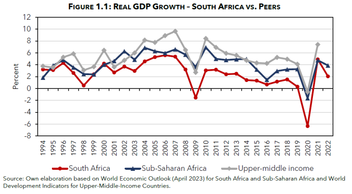

Unit Overview
This unit will detail the economic processes and trading processes of southern africa, detailing its economic successes and failures, and how that may have affected the region. We will explore the natural resources in the region, studying the different sectors of the economies, as well as the imports and exports of the region. We will see the economic effects of the apartheid and unemployment/Inflation rates.
7.1: Natural Resources
This section provides a brief overview of the different types of resources that the region primarily uses, as well as how they are used. This subunit includes a case study on the primary and informal sectors of the economy.

7.2: Imports and Exports
This section will be used to detail the different imports and exports that various countries in the region undertake, and how it affects the regional economy as a whole.
7.3: Economic Effects of Apartheid
This section will discuss the economic inequality and consequences that came out of apartheid, affecting south africa, along with their territories and bordering southern african nations.
7.4: Unemployment and Inflation
This section will be used to detail the different imports and exports that various countries in the region undertake, and how it affects the regional economy as a whole.
7.5: Land Redistribution Programs and its Effects on the Economy
This section will take a look at the poorly managed land redistribution programs in countries such as South Africa, Namibia, Zimbabwe, and Botswana, and detail how it has hurt various sectors of their economy. This will include a case study on land redistribution programs.
Instructional Tool - Data Analysis and Presentation
Students will create a data - driven economic report on Southern Africa, analyzing data related to economics. They will then present this to the class.
Case Study - Informal Economic Sectors
The informal sector of the economy is characterized by economic activities that occur outside of the regulation and taxation of the government. Much of Southern African countries' economies consist of a large percent of informal workers, who usually work by selling produce, or other consumer goods. However, within Southern Africa specifically, there are also informal or illegal mining operations, which also contribute a lot to the economy of these nations. APESA will explore how the informal economic sectors for various Southern African countries play a part in their central government’s decision making on their economy.